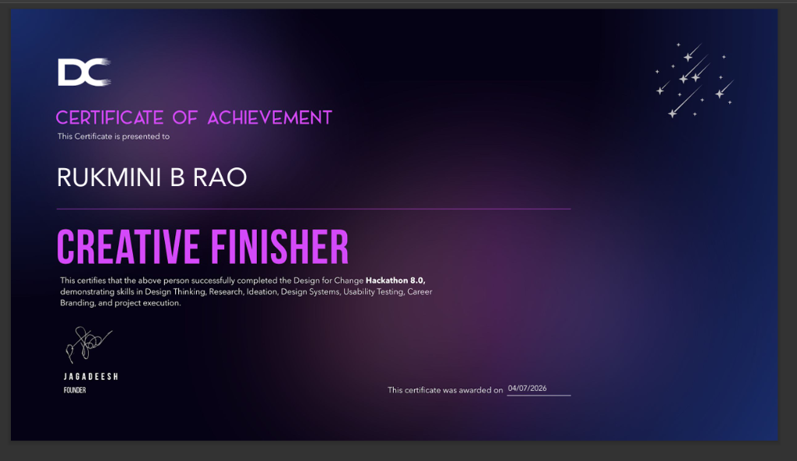
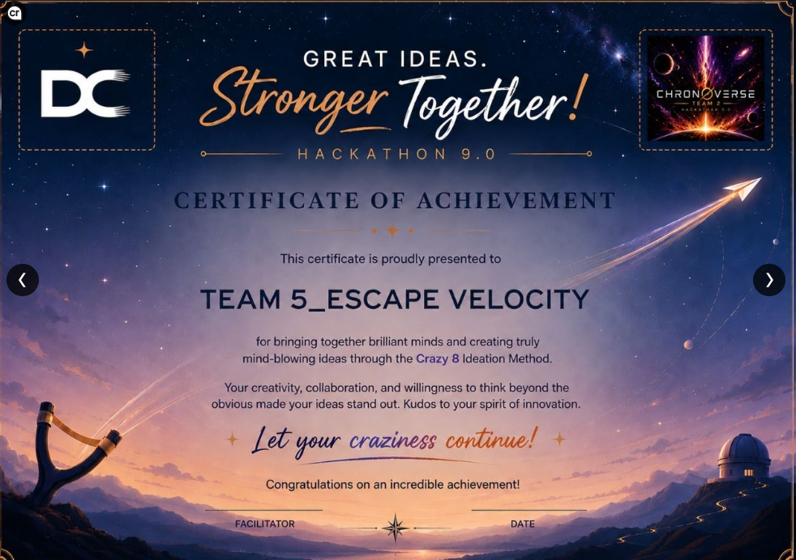
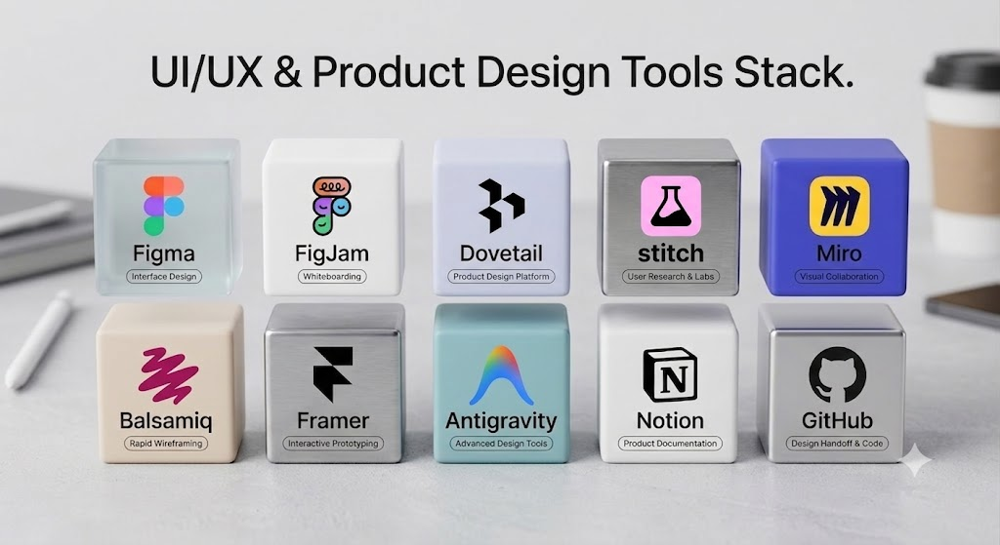
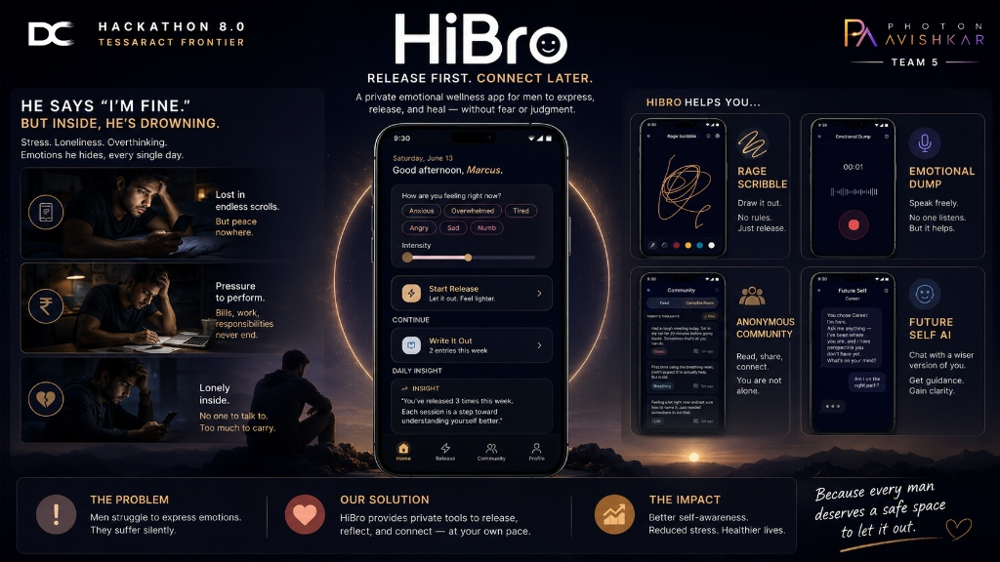
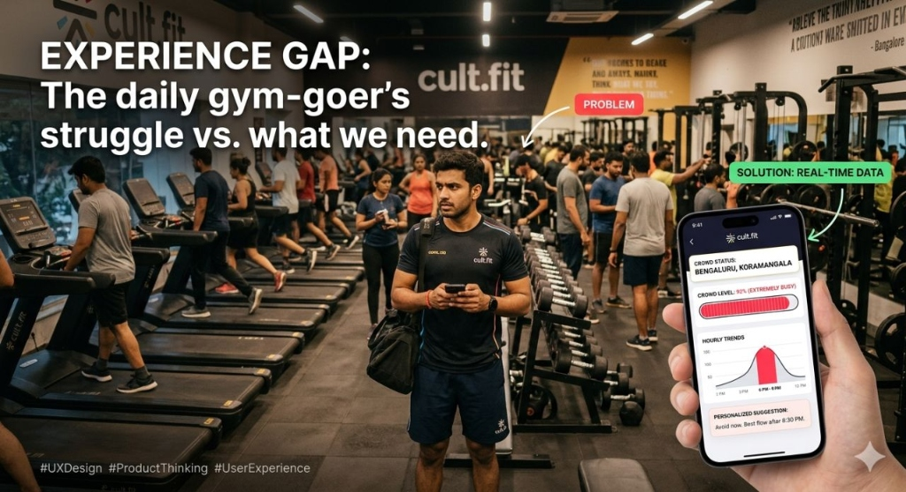

Good design makes difficult moments feel clearer, safer, and more manageable.
What I believe about design now.
Making complex real-world systems easier to understand and use.
I am Rukmini Rao, a UI/UX designer with four years of automotive software experience. I turn complex workflows, real-time information, and service coordination into clear UX flows and thoughtful interfaces.
complexity · clarity · design
“I turn complex real-world systems into clear, meaningful experiences that people can understand and trust.”
“I help people navigate everyday problems with clear, considerate digital experiences grounded in research.”
Before design, I worked in automotive embedded software at Bosch, where I learned to work with complex systems, constraints, testing, and real-world engineering behaviour. I enjoyed solving technical problems, but I wanted to work closer to people and understand how they experience the systems I was helping build.
I discovered UI/UX as a space where structured thinking could meet observation, visual thinking, creativity, and human behaviour. My transition into design is about turning that engineering foundation into clearer, more useful experiences.
A technical foundation in how electronic systems behave.
Four years in automotive embedded software, working on complex fuel-injection driver systems using Embedded C, and contributing to testing, diagnosis, hardware/software workflows, and real-world engineering validation.
I had strong systems and engineering experience, but needed to translate that background into a credible UI/UX story rather than appearing to be a developer who simply learned design tools.
Across my design projects, I kept returning to problems where a service or system existed but people still felt uncertain because they could not see status, trust the people involved, or understand what happened next.
I now start by asking where the experience breaks against real-world behaviour and operational reality, rather than starting with screens.
What I believe about design now.
I look for where an experience breaks against real-world behaviour and operational reality before deciding what to design.
I connect research insights to practical, human UI decisions without overstating what has been validated.
A UI/UX designer who turns complex real-world systems into clear, meaningful experiences that people can understand and trust.
Interviews, surveys and research synthesis that turn what people say and do into usable insights.
Defining the real problem behind a service — trust, visibility, or transition — before deciding on features.
Mapping end-to-end journeys and information architecture across multi-step services and states.
Wireframes to high-fidelity interfaces with clear hierarchy, consistent components and purposeful detail.
Interactive prototypes and usability testing, with findings reported as observed — not overstated.
An engineering habit from Bosch: working with constraints, testing and real-world behaviour — now applied to services and people.
Where does the experience break against real-world behaviour and operational reality?
Interviews and surveys to understand what people see, trust, and expect next.
Problem statement, journeys and information architecture before screens.
High-fidelity UI and prototypes, tested where possible — and honest about what is still unvalidated.
Design for Change Hackathon 8.0

Hackathon 9.0 (Stronger Together) — Recognised for out-of-the-box thinking using the Crazy 8 Ideation Method.


I am fascinated by how people behave, adapt, and change. Nature adapts to its environment and evolves through constraints, and I think about design similarly. I want experiences to feel natural to use, meaningful to people, and strong enough to last.
Create something useful and meaningful enough to remain valuable long after I move on.
Making things that are genuinely useful — work that keeps its value beyond the moment it was made.
I want what I create to stay meaningful to people long after I move on to the next thing.
I design for experiences that feel natural today, remain meaningful tomorrow, and are strong enough to last — which is why I keep asking “Will this work in the real world?”
Travel, observe different cultures and behaviours, and use those observations as another form of research.
Travelling and observing — noticing how people in different cultures behave, adapt, and change.
Observation is another form of research. It shows me how people actually live with the systems around them.
It is where my process begins: observe and understand real behaviour first, then adapt the design to it.
Make thoughtful, original work that is distinctive enough to be remembered.
Thoughtful, original making — including sketching and visual process work.
I want my work to be distinctive enough to be remembered, not interchangeable.
It pushes me toward purposeful visual detail rather than decoration — work with a clear point of view.
Nature adapts to its environment and evolves through constraints. I think about design the same way.
“I want to design things that feel natural today, remain meaningful tomorrow, and are still useful years from now.”— Rukmini Rao
Each case study opens in place. Evidence is labelled honestly: what was tested, what came from informal feedback, and what remains unvalidated.
A guided, resident-facing waste-collection flow — from waste selection to live status, confirmation and issue reporting.
Waste collection and segregation can be difficult to coordinate when residents need clear guidance, location support, collection status, and a way to report issues. Swachha Bengaluru designs a clearer resident-facing flow around waste selection, collection visibility, confirmation and issue reporting.
Research identified uncertainty across five moments of the collection experience:
When will collection actually happen?
Which waste goes out — wet or dry?
Where is the truck right now?
What happens if the truck is missed?
How do I report a problem?
Bengaluru residents using a civic waste service.
Exact target groups: To be added
Mobile app.
Digital-comfort range: To be added
At home and during the waste-collection handoff.
15 interviews and 15 survey responses with residents; 7 participants in usability testing, including older users.
The location decision, and independent completion for some users — particularly older participants.
Make location choices and service-state feedback clearer.
Supporting choices: guided state changes, confirmation, and an issue-reporting path.
Residents need to coordinate waste handoff and may need guidance through location and service states.
Make collection actions more understandable.
Residents were unsure about collection timing and truck location.
DecisionLive truck tracking with an ETA inside collection status.
Residents had no timely signal of what was happening.
DecisionA notification step during onboarding, followed by service-state updates.
Waste-type uncertainty at the moment of handoff.
DecisionA wet / dry choice on Home, supported by waste guidance.
Residents could not tell when collection was complete.
DecisionExplicit arrival and collection-confirmation states.
Missed pickups had no clear next step.
DecisionA missed-pickup reporting path from the confirmation stage.
The location enable-vs-skip choice caused hesitation; 3 of 7 needed guidance.
IterationRevised the flow to make location choices and service-state feedback clearer.
Revised-vs-original screen comparison: To be added
Waste collection and segregation can be difficult to coordinate when residents need clear guidance, location support, collection status, and a way to report issues.
Design a clearer resident-facing flow around waste selection, collection visibility, confirmation, and issue reporting.
Developed the collection flow and tested it with 7 people. 4 of 7 completed independently, while 3 needed guidance. Older users needed additional support; the location enable-versus-skip decision was a key usability gap.
Revised the flow based on the observed guidance needs. No broader service, operational, or behaviour-change impact is claimed.
The “after” describes the designed flow, not a measured service outcome.
Permission moments are design moments. The location enable-versus-skip decision was the key usability gap in an otherwise linear flow.
Design the guided path, not only the ideal one. 3 of 7 participants needed guidance, and older users needed additional support.
Visible service state is the product. The service already existed; the uncertainty came from not seeing status, arrival or what happens next.
“Reliable Help for Your Modern Home” — a household-services concept that treats hiring as a high-trust decision, not just a search.
Finding household help is a high-trust decision, not just a search problem. Households need confidence in who they invite home and clarity after hiring. Sahayak supports the complete journey — discovery, trust assessment, trial, agreement, ongoing management, leave visibility, ratings and exit.
Research with 10 households revealed that discovery alone did not solve trust, agreement, or continuity problems.
Confidence before inviting help into the home.
Committing to an arrangement before knowing if it fits.
Unpredictable leave disrupting the household.
Unclear ongoing accountability after hiring.
Apartment and individual-home households, with younger and older members, seeking household help, cooks, hourly or live-in workers.
Mobile app. Helpers may have lower digital comfort, so household support may be needed.
Before hiring, during trial and agreement, and throughout the working arrangement.
10 households surveyed during a one-day sprint.
Confidence before inviting help home; commitment risk; unexpected leave; unclear ongoing accountability.
Verification cues, a trial step, shared leave visibility, contract details, ratings and an explicit exit.
Supporting choices: verification, a detailed profile, trial, agreement, shared leave visibility and exit.
Households borrow trust from neighbours; helpers may take unpredictable leave.
Move from informal trust and uncertainty to visible information and shared planning.
10 households surveyed.
Informal feedback only; number of people not recorded. No structured task-based usability test.
Usability · adoption · trust · safety · satisfaction · business impact.
Households borrow trust from neighbours before inviting someone home.
DecisionVerification cues and a detailed profile as the first trust signal.
Committing straight away feels risky.
DecisionA trial step — booking and confirmation — before the agreement.
Terms of the arrangement were often unclear.
DecisionContract details visible and manageable inside the app.
Unexpected leave created uncertainty.
DecisionShared leave visibility within ongoing management.
Ongoing accountability was unclear.
DecisionRatings and information upload during the arrangement.
Ending an arrangement had no defined path.
DecisionAn explicit exit screen.
Finding household help is a high-trust decision, not just a search problem. Households need confidence in who they invite home and clarity after hiring.
Design a concept that supports discovery, trust assessment, trial, agreement, ongoing management, leave visibility, ratings, and exit.
Surveyed 10 households; defined a flow from verification to trial booking, contract management, ongoing service, leave, rating and exit; designed eight final UI screens. Informal feedback led to leave, information upload, ratings and cooking-help scope being added.
A complete concept prototype with informal positive owner feedback. Structured task-based usability results, adoption, safety and business impact remain unvalidated.
Based on concept design and informal feedback; not a measured outcome.
Discovery is not the problem; trust is. Research with 10 households showed that finding help did not solve trust, agreement or continuity.
Trust has to last the whole arrangement. Leave, ratings and an explicit exit matter as much as the first booking.
Both sides of a marketplace are users. Some helpers raised digital-comfort concerns, so household support may be needed.
Release first. Connect later. A low-pressure emotional-wellbeing concept that starts with private release and keeps connection optional.

Urban working men may suppress emotional overwhelm because they fear burdening others, rely on diversion-based coping, and do not always trust an immediate social or clinical response. HiBro begins with private release and keeps reflection or connection optional.
A 1–2 minute start: “How are you feeling right now?”
Choose a feeling — anxious, overwhelmed, tired, angry, sad, numb — and set its intensity.
Draw it out. No rules. Just release.
Speak freely. No one listens. But it helps.
Read, share, connect — with no identity, likes or comments on anonymous posts.
A group space within Community, next to the Feed.
Daily insight on release patterns, e.g. “You’ve released 3 times this week.”
A concept for chatting with a wiser version of yourself.
Can stop people seeking even low-stakes emotional support.
Preferred a 1–2 minute check-in over high-effort support.
Overwhelm surfaces in isolated, late-night moments.
Emotional patterns described as random or unpredictable.
Create a low-pressure concept that begins with private release and keeps reflection or connection optional.
Exact HMW wording: To be added
Urban working men, principally ages 23–45.
Mobile app, intended to be low-friction and private.
Late-night, isolated, or unpredictable overwhelmed moments.
52-person survey plus interviews.
Sharing can feel burdensome or unsafe; distressed moments can be unpredictable; high-effort support may be avoided.
Start with a 1–2 minute check-in and private choices; keep connection optional.
Supporting choices: private release first; anonymous or optional connection later; no identity, likes or comments in anonymous posts.
Diversion through work, scrolling, gaming, sleeping, or ignoring feelings.
Encourage a short private release before — or instead of — pure avoidance.
Base: 52-person survey. Interviews supplemented the survey.
No usability test documented.
Emotional benefit · safety · engagement · community trust · help-seeking impact.
Fear of being a burden.
DecisionPrivate release first — release tools that need no other person.
Preference for a 1–2 minute check-in.
DecisionA Quick Check-in with mood and intensity as the entry point.
Random or unpredictable emotional patterns.
DecisionStart from how you feel right now, then choose a release method — Rage Scribble or Emotional Dump.
Late-night overwhelm.
DecisionLow-friction, private tools for isolated and late-night moments.
Low trust in an immediate social response.
DecisionOptional connection: Anonymous Community and Campfire Rooms, with no identity, likes or comments on anonymous posts.
Reflection should follow release, not precede it.
DecisionProfile Insights and the Future Self concept come after release.
Urban working men may suppress emotional overwhelm because they fear burdening others, rely on diversion-based coping, and do not always trust an immediate social or clinical response.
Create a low-pressure concept that begins with private release and keeps reflection or connection optional.
Used 52-person survey signals and interviews to shape quick check-ins, mood/intensity entry, Rage Scribble, Emotional Dump, anonymous community, Campfire rooms, profile insights, and a Future Self concept.
A research-informed hackathon prototype. The emotional benefit, perceived safety, and impact on help-seeking have not been tested.
Intended experience only. No emotional or behavioural outcome has been measured.
Release before connection. When half of respondents fear being a burden, asking people to share first is the wrong starting point.
Short and immediate beats comprehensive. 46% preferred a 1–2 minute check-in, and 48% described their patterns as unpredictable.
Be honest about what a prototype proves. Emotional benefit, safety and help-seeking impact still need testing with the people the concept is for.
A supportive student sleep experience that helps with the phone-to-sleep transition, instead of only tracking sleep afterwards.
“One more reel.”
Students often know late-night phone use delays sleep but still struggle to move from entertainment and overthinking into sleep. Unora is a wind-down app with Nora the penguin companion, trusted accountability, and an optional bedside-device ecosystem built around a phone-placement ritual.
A gentle prompt to begin winding down.
A quick check of how the student feels before bed.
Guided calm: breathe, or release thoughts.
A physical phone-placement ritual with the optional bedside device.
A quick energy check the next morning.
A penguin companion offering support and recovery messaging.
A trusted partner for shared commitment.
Insights, streak / recovery feedback and rewards.
Phones are used to relax at night, and it is hard to stop scrolling.
Entertainment becomes a reward after study, and the loop continues.
Unfinished work and overthinking keep the mind active.
Proximity makes stopping harder; weekends disrupt routine.
College students, such as an Android-using day scholar or a hostel student.
Mobile app plus an optional bedside device.
The transition from study, entertainment, or overthinking to bedtime.
55–65 participants across team research activities.
Entertainment is a reward after study; unfinished work and overthinking keep the mind active; the phone is always near.
Physical phone-placement ritual, guided wind-down, quick energy check, and trusted-partner accountability.
Supporting choices: gentle nudges, a calm wind-down, Nora the companion, recovery messaging, and a trusted partner.
Intended behaviour change: help students put the phone away and complete a wind-down.
55–65 participants across research activities.
Peer critique and internal reviews drove specific product and device changes.
Specific changes: To be added
Final UI usability testing was done (latest user-confirmed status).
Participants, tasks, findings & outcomes: To be added
Task success · SUS · bedtime shift · retention · device efficacy · sleep outcomes.
The phone is always near.
DecisionA physical phone-placement ritual, supported by an optional bedside device.
Unfinished work and overthinking keep the mind active.
DecisionA guided wind-down with two paths: breathe, or release thoughts.
Entertainment is a reward after study.
DecisionGentle bedtime nudges rather than punishment.
Guilt and frustration after late nights.
DecisionNora the penguin companion and recovery messaging.
Awareness alone did not change behaviour.
DecisionTrusted-partner accountability.
Students need to see whether it is working.
DecisionA quick morning energy check feeding insights and streak / recovery feedback.
Students often know late-night phone use delays sleep but still struggle to move from entertainment and overthinking into sleep.
Create a supportive student sleep experience that helps with the phone-to-sleep transition instead of only tracking sleep afterwards.
The team synthesised research across 55–65 participants and designed a wind-down app, Nora the penguin companion, trusted accountability, and an optional bedside-device ecosystem. Peer critique and internal reviews shaped iterations.
A high-fidelity team concept and design system. Final UI usability testing was done; its details are still to be added. No measured sleep outcome or working device has been completed.
No sleep or bedtime outcome has been measured.
Awareness is not behaviour change. Students already knew late-night phone use delays sleep; the design had to support the transition itself.
Where the phone is matters. Because the phone is always near, a physical placement ritual became part of the concept.
Support over punishment. Guilt and frustration were already present, so the tone is calm and focused on recovery.
An independent product observation identifying a real-world experience gap and proposing a user-centred improvement.

Users successfully book a slot via the app, but arrive at the gym to find it overcrowded with no available machines or floor space.
Gym-goers waste time waiting for equipment, disrupting their workout flow and creating a frustrating, unpredictable offline experience.
The app optimizes for digital booking limits but ignores the physical capacity constraints and real-time occupancy of the facility.
Bridge the gap between digital booking and physical reality by surfacing real-time gym conditions to users before they leave home.
Leverage existing user check-in data to calculate live crowd density. Shift the app's role from a simple booking utility to a proactive habit-enabler.
Display a simple "Live Crowd Level" indicator (Low/Medium/High) on the booking screen based on current check-ins minus average exit rates.
Users can make informed decisions about when to visit, leading to a better offline experience, higher satisfaction, and stronger habit retention.
A/B test the MVP to measure if crowd-awareness data actually shifts booking distributions from peak to off-peak hours.
I’m looking for UI/UX and product design roles. If you’re a recruiter, design lead, founder or mentor, I’d love to hear from you.
Let’s connect ↯ Download Resume